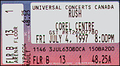

|
July 4, 1997 Corel Centre. Ottawa, ONT
 scan by Gregor Prahl
The Ottawa Sun
Band's body of work 'Like the diary of growing up' The members of Rush have never been ones to revel in past glories, but this year, they're making a tentative exception. For starters, they recently remastered their entire early catalogue of studio albums -- from the 1974 self-titled debut through 1987's Hold Your Fire -- and prepared a pair of best-of anthologies. And for their current tour, which arrives at the Corel Centre on Friday, they've decided to take advantage of the three-hour "An Evening With Rush" format to revisit some of the band's neglected past. That means alongside material from their latest album, Test For Echo, they'll play the entire 1976 conceptual epic, 2112, drummer Neil Peart says. "It's the first time ever in history. When it came out in 1976, we were still an opening act with a 25 minute set, so giving 20 minutes of that 25 minute set (to 2112) wouldn't work, so we had an abridged version. Then other albums came along and (2112) got shorter and shorter," Peart says backstage prior to a New Jersey concert. Before a question has scarcely been posed, Peart darts off with an articulate, well-reasoned response -- not because he's on interview autopilot, but because his mind is as quick and finely tuned as his drum-work. "There's interesting things when you go back," he says of reconsidering the trio's track record for the current tour. "Some things don't sound the way they are catalogued in my mind." It's a point best illustrated by a trawl through the Rush catalogue, too. Taken as a body of work, the remastered CDs chart the trio's fascinating evolution. They started life as a not-very-inventive boogie band on 1974's Rush. By the time they recorded 1975's Fly By Night, Peart had replaced original drummer John Rutsey and was edging the band into a more cerebral direction. By 2112 and 1977's A Farewell To Kings, the music became more complex and the lyrics began to draw on influences as diverse as philosopher/novelist Ayn Rand and fantasy writer J.R.R. Tolkien, before finally arriving at the less didactic, thoughtful songs of recent records like the latest, Test For Echo. "The nicest thing anyone has ever said is that the band has been a soundtrack to people's lives. Because it is such a direct reflection of how we really are," says Peart. "A lot of bands are making up a mythology and writing songs to suit it, being 'the rock guys.' Or writing to a formula for the radio or whatever popular taste happens to be. For us, it has been like a diary. "As our tastes have changed musically -- and certainly for me lyrically -- that has always been reflected for me. As I have questioned different values and the passing of time and what that is all worth, all that has been reflected in the music in a very direct sense. It has sort of been like the diary of growing up, like Adrian Mole." Rand's me-first philosophy colored early Rush work like Anthem and 2112, but the rhetoric has softened into a more humanistic approach on recent Rush albums. But when music represents such a direct reflection of Peart's own state-of-mind at any given time, doesn't he run the risk of performing songs with ideas he no longer holds? "Those would be ones that we would disavow. There were songs suggested we play, but we said we wouldn't be able to relate to that, more musically than lyrically," he says. "The lyrical growth has been a process of expansion. There's nothing I would recant. But musically there are things that make me cringe. Those were ones that, when they were brought up, we would say, no, no. Not that." So what songs can Peart, Geddy Lee and guitarist Alex Lifeson not bring themselves to perform now? "That's nobody's business, really," he says. "Every song we do play is one we want to play. Even one as popular as The Spirit Of Radio, we felt stale on it and we put it out of the set. We retired it for awhile." Over the course of 23 years, Rush has toured and recorded relentlessly, and always managed to attract a new, young audience while maintaining a core following. Despite those years in the public, they have jealously guarded their privacy. Peart still sounds angered by rampant, false Internet rumors last year that claimed he was dying of brain cancer. Even after all this time, Peart says he is still mystified by celebrity -- a topic he tackled in the 1981 song Limelight. "And how poignant it becomes onstage every night! I look out at people singing that song and I wonder how deeply it resonates. How much do they understand? "It was an effort to try to explain something that seems to be unexplainable. No matter how many times I go over it, it leaves bad feelings or leaves them mystified. Since that song, I have left the subject alone," he says. "Doesn't anyone else think this is weird, to be treated like that? Set apart like that and treated in such an inhuman way? Little kids can see it. When my daughter was small and would see people treating me weird, some stranger coming up to me on the street, she would think that was so weird. "It is weird. It is unnatural for a stranger to come up to you that way. It remains a strange feeling unless you numb yourself to it or play along with it, as I see a lot of people do. 'You love me? I love me too!' You have a choice of responses, and I always get embarrassed, because it is a very unnatural position to be in. It could never be otherwise." After this tour, the drummer expects another studio album, followed by a live album drawing from the current and previous tour, as well as a 1979 BBC recording that never made it to broadcast. And then, most likely, more touring. Surprisingly, Peart says it was the thought of playing the same songs night after night that originally pushed the group to explore arcane, challenging song structures. That challenge drives the group to this day. "The good thing is, a song like Tom Sawyer (from 1981's Moving Pictures) is challenging enough and remains challenging enough, that it is never going to be easy to play and it is never going to be boring. "We never have that albatross some bands have of being tired of their songs and endlessly having to rearrange them in some weird way, just to keep your own interest alive. "We were writing songs to play them live night after night, so we were aware of making them challenging and exciting in personal terms. Over 20 years, that stands us in good stead."
The Ottawa Sun July 5, 1997
Oh, what a Rush RUSH has been honored with Junos by the record industry and the Order Of Canada by its country, but the prize they really deserve hasn't been invented yet. Attracting a rabid following willing to accommodate musical growth and change, sticking to ideals but adapting new ideas with dignity, staying steadfastly independent in a business that endorses compromise and conformity -- they don't hand out medals for that kind of thing, but they should. And bassist-singer Geddy Lee, guitarist Alex Lifeson and drummer Neil Peart should be inaugural members of that pantheon. Last night, the band's marathon Test For Echo tour wrapped up at the Corel Centre with a three hour performance before 8,500 of the faithful. And it began with a typical Rushian sense of the spectacular and the absurd. As the houselights dimmed, the PA played Pavement's song Stereo, complete with kidding lyrical reference to Rush's singer ("What about the voice of Geddy Lee? How did it get so high? I wonder if he speaks like an ordinary guy?"). That led into Thus Spake Zarathustra, accompanied by rear-screen projections of an interstellar bolt melding with (I'm not kidding) a cosmic hardware nut. And then, in an eruption of light and noise, Lee, Lifeson and Peart appeared, zipping through a breathless brace of songs, including Limelight and Stick It Out, and were greeted like conquering heroes. Lee's voice has always been an acquired taste, but he was in superb form, showing no obvious strain from the months of touring. Lifeson's low-key side project Victor seems to have had the lingering effect of refining and honing his performance. But the real treat of any Rush concert is watching Peart, literally surrounded by a wall of percussion instruments, athletically serving up dexterous, rhythmic marvels. Rush must be the only group to attract a legion of air-drummers to every show. Closing night giddiness had the threesome in high spirits during an expanded rendition of Closer To The Heart, with Lifeson and Lee attempting some hilariously feeble choreography. Snuggled surreally next to Lee's bass amps was a fridge covered in souvenir magnets. During intermission, the screen showed kitschy drive-in snack bar ads, and in the song Test For Echo, a satellite dish flashed lasers onto the arena roof. Then all hell broke loose during Tom Sawyer, with crew members staging a puppet show behind Lifeson's amps, and a stage invasion by a beefy male hula dancer. During an encore race through the instrumental YYZ, the band teased the crowd with a brief hint of their outer-space epic, Cygnus X-1. The sound and lighting were as flawless as the musicianship. Speaker stacks suspended around the hockey rink allowed the sound to careen around the room and create cool stereo-panning effects. Songs like Driven (with a Lee bass solo inserted into the mid-section), the anti-totalitarianism parable The Trees and Roll The Bones were enhanced by slick conceptual video sequences. The performance was also assisted by a superbly-directed multi-camera video crew, which broadcast an up-close view of the trio's instrumental work onto the big screen. During Red Barchetta, the effect was particularly... well, effective. Peart had said in an earlier interview that there were certain songs the group can't bring themselves to play anymore, and given the selection of songs at last night's show, we'll take that to mean anything off the group's pre-1976 oeuvre. Nothing from that era made the cut. The good news for longtime Rush fans, though, was the inclusion of their conceptual monster, 2112 -- performed in its entirety for the first time on this tour. During the staccato intro, a whole row of fanatics at the front pumped their fists skyward in perfect choreography with each eruption of noise. Critics and hipsters may scratch their heads, but is there any doubt hardcore Rush fans had been waiting a long time to hear the unabridged version of this sci-fi fable? By post-punk standards, it's hopelessly grandiose, and let's not pine for the days of prog-rock. But in a time when dumbing down music is the cool thing to do, it's nice to know someone still likes to think big. The band members have consistently denied rumors that this is their last tour. But if this is the end of Rush, last night's show would stand as a stellar swansong. Sun Rating: four stars (out of five)
The Ottawa Citizen July 6, 1997
Party atmosphere proves Rush still rocks Aside from the usual crew of head shakers and air thumpers at the front of the stage, the Rush crowd at the Corel Centre Friday was a quiet, respectful bunch of people intent on listening rather than using the music as a background for their own antics. A casual observer might have judged them to be bored for most of the two-and-a-half hours the Toronto trio was onstage. Bored they were not and proof came at the end when most of the 14,000 or so rose with the house lights. There had not been the usual early gallop to the parking lot: if the band had played until 2 a.m. -- and they have more than enough songs to do so -- most everyone would have stayed put. This was the last date of the Rush Test For Echo tour and there was a palpable party atmosphere onstage, particularly during the last 30 minutes. The backstage crew was intent on fun, and frontmen Geddy Lee and Alex Lifeson were infected too. The end of a tour, and the grind of traveling, is a joyous occasion, especially for those who work in the shadows. Rush occupies a unique place in rock. Guitarist Lifeson, bassist-vocalist Lee and drummer-philosopher prince Neil Peart, have sustained a successful career, while their English progressive rock counterparts (Yes, Genesis, Emmerson, Lake and Palmer included) have atrophied. Why? Perhaps it has something to do with attitude -- and, of course, lots of ear-splitting noise, eye-popping lights lights and computerized techno wizardry. The live Rush has moved closer to its audiences over the years and that has been important to the group's survival. Lee does most of the audience relations work. Lifeson cruises on the vanity ramps, contorts his face and shows off his fret work. There's nothing modern about that. Peart, remote and hard-working, pounds away on his semi-circle of percussion -- the Rush engine. As Geddy Lee suggested at the outset, one of the group's challenges is deciding which of its vast number of songs to play. Doubtless there were some disappointments at tunes omitted, but the tops of the waves were touched -- superb versions of Roll The Bones, Nobody's Hero, Closer To The Heart. Most of the songs were accompanied by excellent videos which were unfortunately obscured for many on the sides of the arena by hanging light structures. Rush isn't, and never has been, above self indulgence, but over 25 years its audience has grown to tolerate the excesses and the band itself has tempered its inclination to drift off into obscure musical interludes. Even Peart's trademark drum solo has developed into something more than an impressive sounding (though not always impressive) interlude of meandering. On Friday, it brought him a standing ovation and was the only time during the evening when the whole audience became obviously animated. And experience has taught Lee, Peart and Lifeson how to pace a concert to perfection. So Rush was hot on Friday: welded as tight as any band currently touring. For all those who stayed until the lights went up, the traffic jam at the end of the night was doubtless a small price to pay.
|